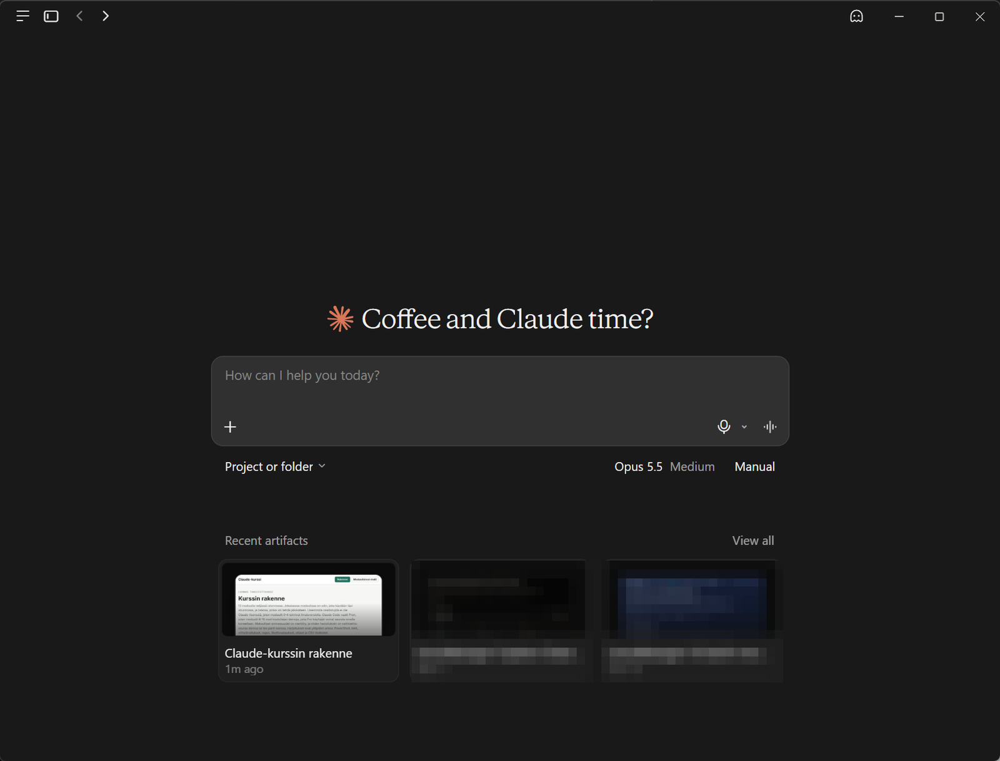

Claude on different devices
Which app for what
All the apps share the same account, the same conversations and the same usage limit. Choose the one that is closest to your work. Plans checked 11/2026.
| App | For | Plan |
|---|---|---|
| Browser, claude.ai | Everywhere, no installation | Free |
| Windows desktop app | A window of its own, screenshots, Cowork and Claude Code in the same app | Free (Cowork and Code: Pro) |
| Mobile app | Questions on the move, photos and voice input | Free |
| Claude in Chrome | Claude works in the browser on your behalf: reads pages, fills in forms | Pro |
| Claude for Microsoft 365 | Claude in Excel, Word, PowerPoint and Outlook | Pro |
The Windows desktop app
Free- Open claude.com/download and choose Windows. The app is also in the Microsoft Store.
- Download the installer. Most machines are x64 machines; for ARM machines (for example Snapdragon) there is a separate ARM64 version.
- Open the downloaded file, and the installation proceeds on its own.
- Start Claude from the Start menu and sign in with the same account as in the browser.
Requirement: Windows 10 or newer. On a work machine, first check whether you may install apps yourself or whether installation goes through software distribution.

Using the desktop app
- A window of its own: Claude sits in the taskbar as its own app and does not get lost among the browser tabs.
- Screenshots and files: drag a file or paste a screenshot (Win+Shift+S, then Ctrl+V) straight into the message. Crop the image before pasting.
- Cowork (Pro): Claude does multi-step tasks with your machine's files, without a command line. More about it in module 5.
- Code (Pro): Claude Code inside the app, without a separate installation. More about it in module 6.
The mobile app
FreeClaude is available for iPhone from the App Store and for Android from Google Play (the links are also on the page claude.com/download). Sign in with the same account, and your conversations appear on all your devices.
- Photograph an error message on a screen and ask what it means. Make sure the picture does not show names or anything else confidential.
- Speak your question when your hands are busy.
- Continue a conversation you started on your computer on your phone.
Claude in Chrome
ProClaude in Chrome is a browser extension with which Claude can read open pages and act on them on your behalf: click, fill in forms and move from page to page. It works only in Chrome, not in other Chromium browsers or on mobile.
- In Chrome, open the extension Claude in the Chrome Web Store and choose Add to Chrome.
- Sign in with your Claude account.
- Pin the extension to the toolbar from the puzzle icon.
- Grant only the permissions you need. Claude asks for permission site by site.
Claude for Microsoft 365
ProClaude works inside the Office apps as an add-in: Excel, Word and PowerPoint are generally available on all paid plans, Outlook as a beta. The add-ins are installed from the Office add-in store, with the links on the page claude.com/download.
- Excel: explain a formula, clean up data, make a pivot table or a chart.
- Word: edit a guide, summarize a long document.
- PowerPoint: sketch slides from text.
In organizations, installing Office add-ins is often blocked or centralized. Ask IT before installing.
Exercises
1. Install the desktop app and ask with a screenshot
Install the app and sign in. Open PowerShell, run the command Get-Service -Name EiOlemassa and take a screenshot of the error (Win+Shift+S). Paste the image into a message and ask for an explanation and a command that lists all stopped services.
Show example answer
Claude reads the error "Cannot find any service with service name 'EiOlemassa'" from the image and says that there is no service with that name. Stopped services:
Get-Service | Where-Object Status -eq 'Stopped' | Sort-Object DisplayName2. Photograph an error message with your phone
Photograph an error message on a screen with your phone (for example the error from exercise 1, or a printer error code). Crop the image so that nothing else shows. Ask Claude for the three most likely causes in order of priority.
Show example answer
Claude reads the text from the image and answers with a numbered list. If the image is unclear, it says so or reads it wrong: check that it read the error code correctly before you rely on the answer.
3. Claude in Chrome summarizes a documentation page
In Chrome, open the release notes of some public software. Ask Claude in Chrome to summarize the changes that matter for administration: breaking changes, security fixes and deprecated features.
Show example answer
Claude reads the open page and returns three headed lists. A good summary refers to parts of the page, so you can check them. If the page is long, Claude can scroll and read more, and it tells you what it did.
Optional: mobile and Office in more detail
- In the mobile app you cannot change the sharing settings of Artifacts. Do that on a computer.
- Pro users: try the Excel add-in with the CSV from the first exercise of module 3. Ask for an explanation of every formula that Claude adds.
- Settings and usage: Settings > Usage shows the same limit regardless of the app.